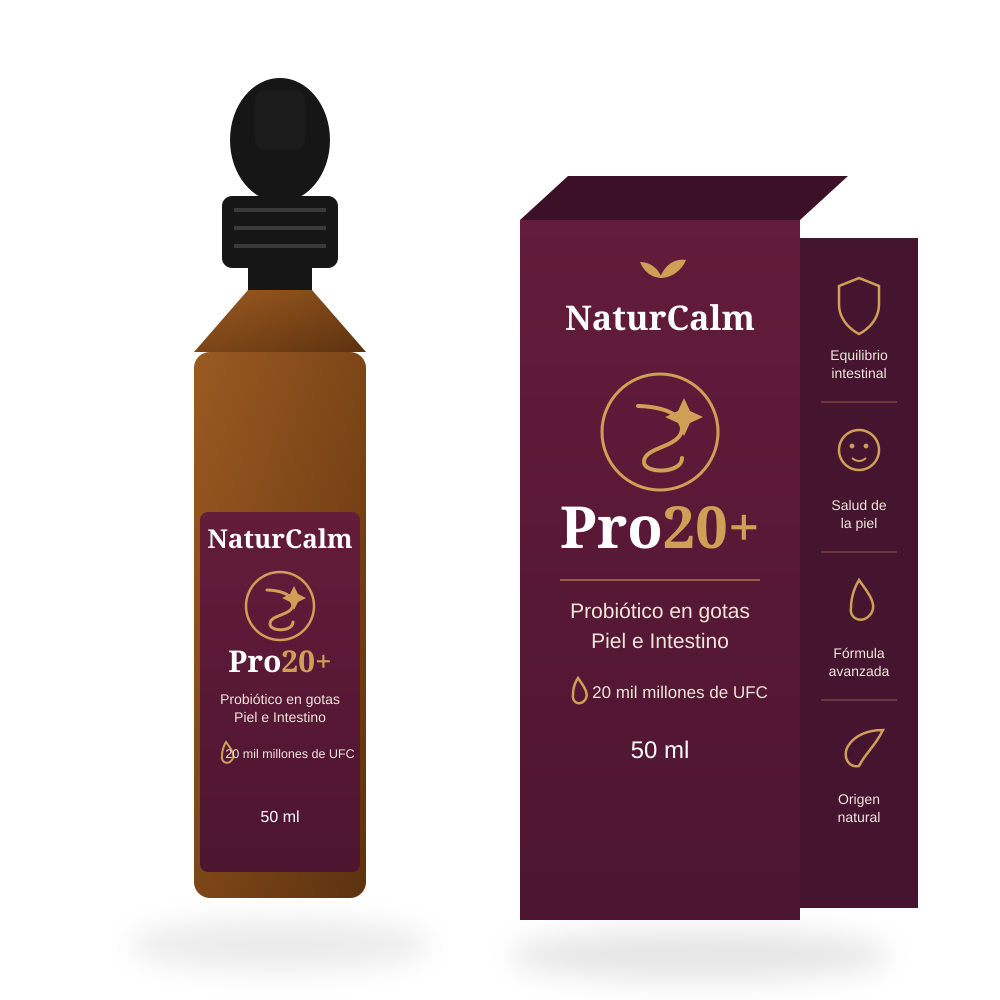

Más vendido
Bienestar completo, simplificado.
Prebiótico + probiótico + posbiótico en una sola gota diaria. 20 mil millones de UFC. 50 ml.
Mezcla de 4 cepas probióticas vivas, fermentado con 10 superalimentos, sin azúcares añadidos, sin gluten, apto vegano.
1 gotero al día, directamente en la boca o mezclado con agua. Preferiblemente por la mañana en ayunas.
Envío en 24-48h. Si no estás satisfecho, te devolvemos el dinero dentro de los primeros 60 días.
La marca
Eczema
★★★★★Psoriasis
★★★★★Rosácea
★★★★★Piel sensible
★★★★★La ciencia detrás
3 sistemas biológicos conectados: cuando el intestino se desequilibra, la inflamación se propaga — y no se queda solo ahí.
La diferencia
1 vez al día, en la lengua. Esa es toda la rutina.
L. rhamnosus, L. plantarum, L. paracasei y B. lactis.
Ácidos grasos de cadena corta y ácidos polifenólicos.
Cereza negra, granada, kiwi y pera, entre otros.
El ritual
Usa el gotero incluido para medir tu dosis por la mañana.
Toma directo o mézclalo con agua, batido o infusión.
La constancia es la clave — 1 gota, cada día.
Cómo funciona
10 superalimentos enteros comienzan la fermentación natural.
Las cepas vivas se microencapsulan para resistir el ácido.
Los probióticos llegan activos hasta tu intestino.
Cada gota cuenta
Apoya la barrera intestinal y la respuesta inmune.
Ayuda a reducir la inflamación de bajo grado.
Ayuda a combatir el estrés oxidativo a nivel celular.
La fermentación produce SCFA que alimentan la respuesta inmune del intestino.
Fruit Fed Flora
Ingredientes enteros fermentados durante semanas para maximizar biodisponibilidad.
Comparativa
El viaje
Menos hinchazón y molestias después de comer.
Mejor absorción de nutrientes durante el día.
Menos rojeces visibles y mayor luminosidad.
Digestión, piel y ánimo trabajando en conjunto.
Dudas
La mayoría de personas nota cambios digestivos en 1-2 semanas y cambios en la piel a partir de la semana 8.
Sí, está formulado para uso diario continuo.
Sí, la fórmula es 100% vegana y sin gluten.
No, el envase opaco protege las cepas vivas a temperatura ambiente.
Sí, puedes pausar o cancelar cuando quieras desde tu cuenta.
Consulta siempre con tu profesional de salud antes de iniciar cualquier suplemento durante el embarazo o lactancia.
Completa tu rutina
"Noté la diferencia en mi digestión desde la segunda semana."
María G. Compra verificada"Mi piel se ve mucho más uniforme después de 2 meses."
Laura P. Compra verificada"Fácil de tomar y sin sabor raro. Repetiré."
Carlos R. Compra verificada